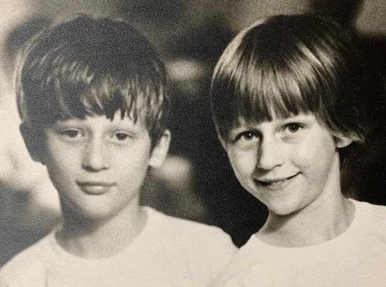
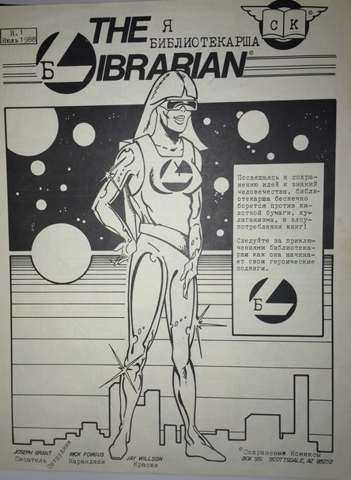

My Birthday: January 31!
My brother and I were born in Nashville, Tennessee, where our father was working on his PhD in Spanish Literature at Vanderbilt University. We moved to Norman, Oklahoma when he took a teaching position at the University of Oklahoma. Our neighborhood was tight-knit, and all the kids ran around in a pack. We spent a lot of time outside, year round. Many of my school friends lived within walking distance and we enjoyed many hours riding our bikes all over town and hanging out at each others houses. There are several beautiful parks in Norman,Oklahoma. We spent summer days at Lake Thunderbird State Park, which was also one of the resevoirs that supplied our drinking water. The water there contains a lot of minerals, iron, in particular. The water was red. The dirt was red. You didn't want to wear a white swim suit, for sure. That part of the country can be quite warm in the summer months, and the tornado season can be a bit much in the spring, so fall is probably the best time to visit the Oklahoma State Parks these days. Many of us have stayed close throughout the years, and we marvel at the relative freedom we had as kids. We were good kids, but nonetheless, wow, we enjoyed an amazing amount of freedom.
Learn more about Lake Thunderbird State Park here.
My family often visited relatives in Tennessee during summers. My aunt was an amateur photographer and she took many photos of all of us kids.
She had her own darkroom, with a cylindrical door that was a bit scary to go through at first. She let us watch her develop the photos.
Here's one she took of my brother, Paul, and me. She was into black-and-white photography that summer. All the photos from that summer make me feel nostalgic.

I met Torin at the University of Oklahoma. We got married and moved to Austin, Texas, where we lived from 1985-1995. I studied linguistics at the University of Texas at Austin and worked as a student worker in the Fine Arts Library. After a couple of years I became a part-time library assistant at the Undergraduate Library. When I graduated with my BA I got a job in the main library, working for a federally-funded Center for the study of Russia, Eastern Europe, and Central Asia. I decided to get a Master's degree in Library Science. My library mentor introduced me to people and professional opportunities that complemented the library work I was doing for the Center, including showing me how to apply for conference funding and how to navigate library professional associations and conferences.
My first professional Librarian job was at the University of Illinois, Urbana-Champaign, also funded by a Center for Russia, Eastern Europe, and Central Asia. After two years, I moved into a tenure-track position and expanded my professional activities. The Slavic and East European Collection was much larger and there was a summer research program that brought in many scholars. I was also doing some projects in Romania, including one with a colleague at the Library of Congress and the US State department. The head of the Slavic & East European Library was also an excellent mentor, and he encouraged and supported everyone who reported to him.
In 1999 I accepted a job managing the Slavic & East European Cataloging unit at the Yale University Library. Over the years, my unit expanded to include other non-Latin script language experts. We were a very international group and people formed bonds across cultural boundaries. Technology and the COVID pandemic greatly changed how work was happening. An increasing amount of professional technical services work now being done by vendors or other units. The department was changing quickly. I had participated in system implementation projects, and learned just enough programming to realize that the future was going to be very different. Computer Science skills and an awareness of the powerful complexities of this technology is vital to remaining relevant. I continue to maintain contact with my library colleagues and I am especially amazed at the changes being brought about by these Massive Agent Systems in the field (acutally, in pretty much every industry). I'm still so much at the beginning stages of understanding machines and their languages, and the changes are happening very quickly.
Librarians are Superheros!
